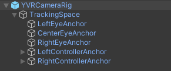

Camera Rig
YVR Unity 软件包包含一个预制件，YVRCameraRig，它是整个 SDK 的核心。它还提供了对 YVRManager 的访问，它是 VR 功能的主要入口。
YVRCameraRig 包含一个名为 TrackingSpace 的游戏对象，它被设计用来微调头部跟踪参考框架和你的世界之间的关系。
在 TrackingSpace 下，你会发现一个 CenterEyeAnchor 的游戏对象，它被标记为主要的 Unity 摄像机，每只眼睛有两个固定的游戏对象，分别命名为 LeftEyeAnchor 和 RightEyeAnchor，以及两个手柄的锚定对象，分别命名为 LeftControllerAnchor 和 RightControllerAnchor。

了解摄像机的行为
当 YVR Unity 包被导入 Unity 时，你的头戴式设备会自动将头部和手柄的跟踪参考传递给 Unity，这使 Unity 摄像机的位置和方向与你在现实世界的位置和方向相匹配。
在一些游戏中，你可能需要控制玩家角色（由摄像机识别）的移动。在这种情况下，你可以让 YVRCameraRig 成为一个游戏对象的子对象，并创建一个脚本来控制该游戏对象的行动。
在场景中添加 YVRCameraRig
YVRCameraRig 是 Unity 主摄像机的替代品，这意味着在 YVR 设备上构建应用程序时，应从 Hierarchy 视图中删除 Unity 的 Main Camera 而使用 YVRCameraRig。
执行以下步骤以此替换 Unity 的主摄像机 为 YVRCameraRig：
- 在 Hierarchy 窗口中右击 Main Camera 游戏对象，并点击 Delete。
- 进入 Project 选项，展开
Packages -> YVR Core -> Prefabs文件夹，将YVRCameraRig预制件拖入 Hierarchy 面板。